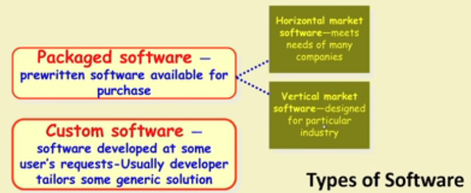

Types of software Proj

~~~~~~~~~~~~~~~~~~~~~~~~~~~~~~~~~
Software Services
It's an umbrella term,includes:
- Software customiztion
- Software maintenance
- Software testing
- Also contract programmers(CP) carrying out coding or any other assigned activities.
Factors responsible for accelerated growth of services
→ Now lots of code is available in a company
⇒ New software can be developed by modifying the closest
→ Speed of conducting business has increased tremedously
⇒ Requires shortening of project duration.
~~~~~~~~~~~~~~~~~~~~~~~~~~~~~~~~~